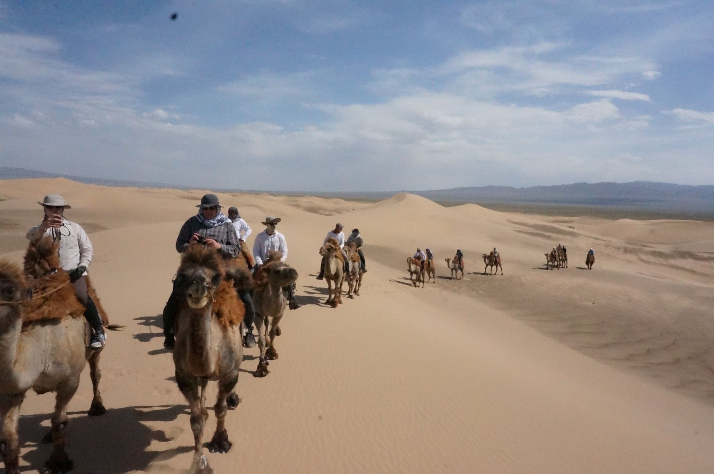

Aktualności
Szykujemy się na kolejne wyzwania.

01.01.2018
Zapraszamy do udziału w Otwartych Międzynarodowych Mistrzostwach Azji w Ground Golfa, które zostaną rozegrane w Ułan Bator, Mongolia w dniach 29-30.06.2018r. Zainteresowanych prosimy o kontakt mailowy pod adres turnieje@groundgolf.pl lub z prezesem klubu. Klub nasz przygotowuje się do organizacji w 2019 roku w Polsce Mistrzostw Europy oraz do uczestniczenia jako reprezentanci Polski w World Masters Games Japonia 2021.

Ground Golf: A game for the elderly in Japan

28-29 lipca 2018 roku odbędą się Międzynarodowe Mistrzostwa Azji

01.11.2017
Zapraszamy na udział w Otwartych Międzynarodowych Mistrzostwach Azji z Ground Golfa w Ułan Batorze, Mongolia 28-29.07.2018
Odbyły się kolejne mistrzostwa z Ground Golf'a w Japonii
.jpg)
01.10.2017
W 2017 roku w Mistrzostwach Świata w Japonii, w których uczestniczyliśmy my z Polski wraz z wieloma innymi grupami, jeden z członków naszej drużyny Michał Dobrzański dwukrotnie zdobył złoty puchar, trafił też hole-in one (prosto do dołka jednym uderzeniem). Nie zatrzymaliśmy się wyłącznie na uczestnictwie w zawodach - uczestnicząc w profesjonalnej nauce golfa zdołaliśmy nabrać wiele doświadczenia. Dni upłynęły przyjemnie dając pozostawiając nam piękne wspomnienia - dzięki pomocy Prezydenta miasta podczas zawodów uczestniczyliśmy w wielu aktywnościach wprowadzających nas w japońską kulturę a także przez 4 dni zwiedziliśmy prywatnie miasta takie jak: Osaka, Nara, Kyoto i Kobe.
Odbył się II międzynarodowy puchar z Ground Golf'a
.jpg)
01.10.2016
W październiku 2016 roku polska drużyna odniosła sukces w zawodach golfowych w Yurihamie, kolega Maciej Dobrzański zdobył złoty puchar. W zawodach wzięło udział ponad 100 zawodników z 12 krajów, w tym z Mongolii. Polski, Hiszpanii, Korei. Zawody otworzyli swoim przemówieniem Prezydent Miasta Yurihama - Masamichi Miyawak oraz pan Kazuo Sonoyama z Japońskiego Związku Ground Golfowa. Pogoda nam sprzyjała i oprócz udanych zawodów, świetnie spędziliśmy te kilka dni. Po zawodach mieliśmy okazję nawiązać wiele nowych znajomości oraz zwiedzić kilka japońskich miast.